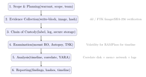

Chapter 22: Digital Forensics¶
Digital forensics is the science of recovering, preserving, and analysing digital evidence in a manner that withstands legal scrutiny. This chapter covers the foundational principles, disk and file system analysis, memory forensics, network forensics, and the emerging challenges of mobile and cloud environments—concluding with anti-forensics techniques that analysts must recognise.
The chapter follows the natural order of an investigation: evidence collection and preservation first, examination and analysis second, reporting last. Each phase has distinct technical and legal requirements, and skipping steps in the early phases can make later analytical work inadmissible.
22.1 Forensics Principles¶
Definition 22.1 (Locard’s Exchange Principle)
Every contact leaves a trace. In digital forensics, every action taken by an attacker on a system leaves artefacts: modified timestamps, log entries, registry keys, memory allocations, or network packets. The analyst’s task is to identify and interpret these traces. The analyst’s own examination also modifies the system (accessing files updates atime, for instance), which must be minimised and documented.
Definition 22.2 (Chain of Custody)
Chain of custody is the documented, unbroken record of who collected, handled, transferred, and stored digital evidence. Each transfer must be recorded with time, date, personnel, and hashes of the evidence at each stage. Gaps or inconsistencies in the chain may render evidence inadmissible in court.
Forensic Acquisition Principles
-
Write blockers: Hardware (Tableau, WiebeTech) or software write blockers prevent any writes to the evidence disk during acquisition, ensuring original evidence integrity.
-
Forensic copy: A bit-for-bit copy of the entire storage device, including slack space, deleted files, and unallocated space. Common tools:
dd, FTK Imager,dcfldd. -
Hash verification: MD5 or SHA-256 hash computed on the original device and on the forensic copy; they must match. This hash is documented in the case log.
# Block-level acquisition with dd (attach write-blocked drive as /dev/sdb)
dd if=/dev/sdb of=/evidence/case001_disk.img bs=512 conv=noerror,sync \
status=progress
# Verify acquisition integrity
sha256sum /dev/sdb > /evidence/case001_original.sha256
sha256sum /evidence/case001_disk.img | diff - /evidence/case001_original.sha256
# dcfldd: dd with hashing and split output
dcfldd if=/dev/sdb of=/evidence/case001.img \
hash=sha256 hashlog=/evidence/case001_hash.log \
bs=4096 conv=noerror,sync sizeprobe=if
# Mount forensic image read-only for analysis
losetup -r /dev/loop0 /evidence/case001.img
mount -o ro,noatime,offset=1048576 /dev/loop0 /mnt/evidence
22.2 Disk and File System Forensics¶
22.2.1 Write Blockers and Evidence Integrity¶
A write blocker sits between the examiner’s workstation and the suspect storage device, intercepting any write commands the OS might issue and returning a “write protected” response while allowing read commands through unaltered. This is not merely a precaution—it’s a legal requirement in most jurisdictions. If a write reaches the suspect drive (even something as innocuous as a filesystem journal update triggered by mounting), the chain of custody breaks and defence counsel can argue the evidence was tampered with.
Hardware write blockers are the gold standard. The Tableau TX1 and WiebeTech Forensic UltraDock are the two most widely used in professional labs. They connect via USB, eSATA, or PCIe to the suspect drive and expose a read-only interface to the forensic workstation. Because they operate at the hardware level, they block writes regardless of what the host OS does—mounting the drive, autorunning, or issuing TRIM commands all fail silently.
Software write blockers are acceptable when hardware blockers are unavailable. On Linux, hdparm -r 1 /dev/sdb sets the read-only flag for the block device, and mounting with mount -o ro,noatime ensures no access-time updates. On Windows, the registry key HKLM\SYSTEM\CurrentControlSet\ Control\StorageDevicePolicies with WriteProtect=1 achieves a similar effect. The risk with software write blockers is that a misconfigured OS—or one that ignores the flag during hot-plug—can still issue writes before the protection activates.
Hash verification closes the chain of custody loop. Compute an MD5 and SHA-256 of the original device (sha256sum /dev/sdb) before acquisition and record the values in the case log. After imaging, hash the image file and compare. A match proves bit-for-bit fidelity; any mismatch, no matter how small, invalidates the copy. Best practice is to hash both before and after every transfer (e.g., when moving the image from the acquisition laptop to the analysis server), so that any alteration—intentional or accidental—is detectable at the exact transfer where it occurred.
Definition 22.3 (NTFS Key Metadata Files)
NTFS maintains several system files critical for forensic analysis:
-
$MFT – Master File Table: one record per file/directory; contains timestamps (Created, Modified, Accessed, MFT-Modified – the “MACE” times), permissions, and data attribute offsets.
-
$LOGFILE – Transactional log for NTFS metadata operations; useful for recovering recently deleted file names.
-
$UsnJrnl:$J – Update Sequence Number journal: records file/directory create, rename, delete, and attribute change events with timestamps; persists across reboots.
-
$Bitmap – Records which clusters are allocated (in use) vs. unallocated (available for carving).
22.2.2 File Carving¶
Definition 22.4 (File Carving)
File carving reconstructs files from unallocated disk space using file format magic bytes (file signatures), without relying on file system metadata (which may be deleted or overwritten). Carving works even when the $MFT entry for a file has been reused.
| File Type | Extension | Header (hex) | Footer (hex) |
|---|---|---|---|
| JPEG image | .jpg | FF D8 FF |
FF D9 |
| PNG image | .png | 89 50 4E 47 0D 0A 1A 0A |
49 45 4E 44 AE 42 60 82 |
| PDF document | 25 50 44 46 (%PDF) |
25 25 45 4F 46 |
|
| ZIP archive | .zip | 50 4B 03 04 |
50 4B 05 06 |
| Windows PE | .exe | 4D 5A (MZ) |
N/A |
| SQLite DB | .db | 53 51 4C 69 74 65 20 33 |
N/A |
| OLE2 (Office) | .doc | D0 CF 11 E0 A1 B1 1A E1 |
N/A |
# Scalpel: configure /etc/scalpel/scalpel.conf to enable file types
# then run against disk image
scalpel -c /etc/scalpel/scalpel.conf \
-o /evidence/carved/ \
/evidence/case001.img
# PhotoRec: interactive; carves 480+ file types; ignores file system
photorec /evidence/case001.img
# Foremost: classic carver; specify types
foremost -t jpg,pdf,zip -i /evidence/case001.img -o /evidence/foremost/
File Carving Challenges and Fragmented Recovery¶
Carving contiguous files is straightforward—the header and footer are both present in adjacent sectors and the tool simply extracts the bytes between them. The hard cases are fragmented files. When a large file was written to a nearly-full volume, the filesystem allocator scattered its clusters across multiple non-adjacent regions. After deletion, the cluster chain stored in the MFT entry is gone, so a carver has no map of which sectors belong together. Most tools handle this by using the maximum expected file size from the configuration file to limit how far they search for a footer after a header match. Set the limit too low and you truncate large files; set it too high and fragmented data from other files gets spliced in, producing corrupt output.
Foremost and Scalpel use static header/footer pairs from configuration files, which you can customise. JPEG carving is reliable because FF D8 FF is distinctive and FF D9 is a clean footer. ZIP-family formats (DOCX, XLSX, APK, JAR) present a harder problem: the central directory is at the end of the archive, not the beginning, and fragmentation between the local file headers and the central directory breaks most simple carvers.
PhotoRec takes a different approach: it understands the internal structure of over 480 file formats and uses this knowledge to validate carved candidates. For example, after finding a JPEG header it parses the JFIF/EXIF structure to determine the true file length, then extracts exactly that many bytes rather than searching for the footer. This format-aware approach produces fewer false positives and handles many fragmentation cases that header/footer carvers miss.
For a practical investigation, always run at least two carvers—their false positive and false negative rates differ by format. Use MD5 deduplication (md5deep -r) on the output directories to avoid re-examining identical files carved under different names. When time allows, bulk_extractor complements file carving by scanning for structured data (email addresses, credit card numbers, URLs, Base64 blobs) without attempting full file reconstruction.
22.3 Timeline Analysis¶
Definition 22.5 (Super-Timeline)
A super-timeline aggregates timestamps from all available sources on a system into a single chronological record, enabling reconstruction of the attacker’s activity sequence. Sources include: $MFT MACE times, $UsnJrnl, Windows Event Logs, Registry LastWrite times, prefetch files, browser history, LNK files, and shellbags.
# Create Plaso storage file from disk image
log2timeline.py --storage-file /evidence/case001.plaso \
/evidence/case001.img
# Filter and export to CSV (sorted by time)
psort.py -o l2tcsv \
-w /evidence/timeline.csv \
/evidence/case001.plaso \
"date > '2024-01-14 00:00:00' AND date < '2024-01-16 00:00:00'"
# Quick grep for suspicious events
grep -i "powershell\|mimikatz\|vssadmin\|net user" /evidence/timeline.csv | \
sort -t',' -k1,1 | head -50
22.3.1 Log Correlation for Incident Reconstruction¶
A super-timeline built solely from disk artefacts gives you filesystem activity; layering event log and network data transforms it from a list of file timestamps into a narrative of what actually happened. The key is correlating artefacts across sources around the same timestamp windows.
Windows Event Log is the richest single source on Windows endpoints. Critical event IDs for incident reconstruction:
-
4624 — Successful logon: records logon type (2 = interactive, 3 = network, 10 = remote interactive/RDP), source IP for type 3/10, and the authenticating account.
-
4625 — Failed logon: correlate a cluster of 4625 events followed by 4624 to identify credential stuffing or brute force.
-
4688 — Process creation (requires audit policy enablement): records parent PID, full command line, and creating user. The command line field reveals
powershell -enc ...orwscript.exe suspicious.vbsimmediately. -
4697 — Service installed: attackers commonly install malicious services for persistence; this event captures service name, binary path, and start type.
-
4698 / 4702 — Scheduled task created/modified: a common persistence mechanism; the task XML embedded in the event contains the command that will execute.
-
7045 — System event log: new service installed (similar to 4697 but logged to the System channel).
Web server access logs contribute HTTP method, URI, response code, and source IP. Correlating a suspicious POST to /wp-admin/upload.php (web server log) with an outbound connection to an unknown IP (firewall log) five minutes later (Zeek conn.log) and a new PowerShell process (Event ID 4688) five minutes after that is the pattern that confirms web shell deployment and first-stage command execution.
Plaso (log2timeline) ingests all of these sources—Windows Event Logs (.evtx), IIS/Apache logs, Windows Registry, LNK files, prefetch, Zeek logs, and many others—and merges them into a single .plaso storage file sorted by timestamp. psort.py then queries and exports slices to CSV or JSON for SIEM ingestion or manual review.
# Ingest disk image plus separately collected event logs
log2timeline.py --storage-file case.plaso \
--parsers winevtx,prefetch,lnk,recycler,mft \
/evidence/case001.img
# Add network logs from Zeek
log2timeline.py --storage-file case.plaso \
--parsers zeek \
/evidence/zeek_logs/
# Export 48-hour window around suspected compromise
psort.py -o l2tcsv -w /evidence/timeline_48h.csv case.plaso \
"date > '2024-03-10 06:00:00' AND date < '2024-03-12 06:00:00'"
# Search the timeline for persistence indicators
grep -iE "4697|4698|schtasks|reg add|startup" /evidence/timeline_48h.csv | \
sort -t',' -k1,1
When building the incident narrative, work backwards from a known bad event (e.g., ransomware encryption start visible in the USN journal) and trace each causal predecessor. The 4688 process creation before the encryption reveals the ransomware binary path; the 4624 logon before that reveals how the attacker authenticated; the firewall log before the logon reveals the source IP. This backward chaining through a correlated timeline is the core analytical technique.
22.4 Memory Forensics¶
Definition 22.6 (Memory Forensics)
Memory forensics analyses a snapshot (dump) of a system’s RAM to recover running processes, network connections, loaded modules, decrypted payloads, and credentials that exist only in volatile memory. Evidence in memory is lost on power-off, making timely acquisition essential.
# Acquisition on Windows (requires admin)
winpmem_mini_x64.exe /evidence/memory.dmp
# Acquisition on Linux (LiME kernel module)
insmod lime-5.15.0.ko "path=/evidence/memory.dmp format=lime"
# Volatility 3: list running processes
python3 vol.py -f /evidence/memory.dmp windows.pslist
# Show command-line arguments for each process
python3 vol.py -f /evidence/memory.dmp windows.cmdline
# Active network connections (like netstat on live system)
python3 vol.py -f /evidence/memory.dmp windows.netscan
# Find injected/suspicious memory regions (VAD with RWX permissions)
python3 vol.py -f /evidence/memory.dmp windows.malfind \
--dump --output-dir /evidence/malfind_dumps/
# Extract NTLM hashes from LSASS
python3 vol.py -f /evidence/memory.dmp windows.hashdump
# Search for strings in all memory regions
python3 vol.py -f /evidence/memory.dmp windows.strings \
--string-file /tools/interesting_strings.txt
windows.malfind Interpretation
windows.malfind identifies memory regions that are: (1) PAGE_EXECUTE_READWRITE or similar executable+writable permissions (uncommon in legitimate code), and (2) not backed by a file on disk (anonymous allocations). False positives: JIT-compiled code (.NET, JavaScript engines). True positives: shellcode, reflective DLL injections, unpacked malware stages. Always dump and analyse the flagged regions.
22.4.1 Process Injection Artefacts in Memory¶
Process injection is the technique attackers use to run malicious code inside a legitimate process, borrowing that process’s trust level and network identity. Recognising the artefacts each injection technique leaves in a memory dump is a core memory forensics skill.
Process hollowing (also called RunPE) creates a target process—often svchost.exe or explorer.exe—in a suspended state, unmaps its original image from memory, writes a malicious PE in its place, and resumes execution. The tell-tale artefact is a mismatch between the PE header in memory and the PE header of the file on disk: the in-memory image at the process base address has a different ImageBase, section names, or magic bytes than the legitimate executable. The Volatility plugin hollowfind compares the in-memory PE header against the on-disk file to detect this.
Classic DLL injection (via CreateRemoteThread + LoadLibrary) is detected by inspecting the target process’s module list for DLLs that don’t belong there. windows.dlllist enumerates the InLoadOrderModuleList from the PEB; any DLL whose path points to a temp directory, AppData, or a non-standard location is suspicious. Cross-referencing against a known-good baseline eliminates the vast majority of legitimate DLLs quickly.
Reflective DLL injection is harder to detect because the injected DLL maps itself into memory using a custom loader routine rather than the Windows loader, so it never appears in the PEB module list. The artefacts are: a memory region with RWX permissions whose content parses as a valid PE header (the “MZ” magic bytes at the start of the region), but with no corresponding module list entry or backing file path. windows.malfind catches most reflective injections by flagging anonymous RWX allocations with PE headers.
Process Doppelganging and Transacted Hollowing are newer variants that abuse Windows NTFS transactions (TxF) to write the malicious PE into a transacted file, map it, then roll back the transaction—leaving no file on disk but a fully mapped image in memory. These defeat on-disk scanning entirely and require memory-only indicators.
Practical Volatility workflow for injection detection:
# Detect RWX anonymous memory with MZ headers (malfind)
python3 vol.py -f memory.dmp windows.malfind --dump \
--output-dir /evidence/malfind_dumps/
# Check each flagged PID's module list for rogue DLLs
python3 vol.py -f memory.dmp windows.dlllist --pid 1234
# Hollowfind: compares in-memory PE vs on-disk PE
python3 vol.py -f memory.dmp windows.hollowfind
# cmdline: show command-line of every process (injected processes
# sometimes have no argv or an implausible path)
python3 vol.py -f memory.dmp windows.cmdline
# For DLL injection: look for LoadLibrary thread start addresses
python3 vol.py -f memory.dmp windows.handles --pid 1234
When malfind dumps a region to a file, run file and strings against the dump. A PE header at offset 0 confirms injected code; strings containing C2 addresses, mutex names, or known malware markers give immediate indicators of compromise without waiting for sandbox execution.
22.5 Network Forensics¶
# Extract HTTP objects from pcap
tshark -r capture.pcap --export-objects http,/evidence/http_objects/
# List all DNS queries and responses
tshark -r capture.pcap -Y "dns" -T fields \
-e frame.time -e ip.src -e dns.qry.name -e dns.a
# Extract TLS SNI (server names, even without decryption)
tshark -r capture.pcap -Y "tls.handshake.type == 1" \
-T fields -e ip.dst -e tls.handshake.extensions_server_name
# Follow TCP stream (reassemble payload)
tshark -r capture.pcap -q -z follow,tcp,ascii,0
# Zeek: generate structured logs from pcap
zeek -r capture.pcap local
# Produces: conn.log, dns.log, http.log, ssl.log, files.log, etc.
# Analyse Zeek logs: find high-byte connections (potential exfiltration)
zeek-cut id.orig_h id.resp_h id.resp_p orig_bytes resp_bytes \
duration < conn.log | sort -k5 -rn | head -20
22.5.1 PCAP Analysis Workflow¶
A packet capture is the closest thing to ground truth in network forensics: it records every byte that crossed the wire. The analyst’s challenge is extracting meaning from potentially gigabytes of raw data.
Wireshark display filters are the first triage tool. Unlike capture filters (which drop packets at collection time), display filters let you show or hide packets from a full capture without discarding anything. Useful patterns:
-
http.request.method == "POST"— shows only HTTP POST requests; immediately surfaces form submissions, file uploads, and API calls that carry data. -
tcp.flags.syn == 1 && tcp.flags.ack == 0— SYN-only packets; each represents a new outbound connection attempt; scanning activity produces hundreds in rapid succession. -
dns.qry.name contains "dga"— adapts to look for domain-generation-algorithm patterns or known bad domains. -
tls.handshake.extensions_server_name— filters to TLS ClientHello packets; the SNI field reveals the intended destination hostname even though the TLS payload is encrypted.
Following TCP streams reconstructs the full application-layer conversation from a sequence of packets. In Wireshark, right-click any packet in the target stream and choose “Follow \(\to\) TCP Stream”. The reconstructed session appears in a scrollable window, with client data in red and server data in blue. This is the fastest way to read an HTTP exchange, FTP transfer, or any cleartext protocol without filtering packet by packet.
tshark is the command-line equivalent and is invaluable for automated processing:
# Extract HTTP host headers from all requests
tshark -r capture.pcap -T fields \
-e frame.time -e ip.src -e http.host -e http.request.uri \
-Y "http.request" > /evidence/http_requests.txt
# List unique DNS queries and their resolved IPs
tshark -r capture.pcap -T fields \
-e dns.qry.name -e dns.a \
-Y "dns.flags.response == 1" | sort -u
# Find all SYN packets to non-standard ports (potential C2)
tshark -r capture.pcap -T fields \
-e ip.dst -e tcp.dstport \
-Y "tcp.flags.syn==1 && tcp.flags.ack==0 && \
tcp.dstport != 80 && tcp.dstport != 443" | sort | uniq -c | sort -rn
# Export all HTTP objects (files transferred)
tshark -r capture.pcap --export-objects http,/evidence/http_objects/
Zeek (formerly Bro) processes pcap files or live traffic and generates structured log files for each protocol layer. The conn.log is particularly useful—it contains one row per completed TCP/UDP connection with source and destination IP, port, duration, and byte counts in each direction. Sorting conn.log by resp_bytes descending immediately highlights large data transfers; sorting by connection count per destination IP reveals beaconing behaviour (a constant, low-volume connection repeating every N seconds is a classic C2 heartbeat). The http.log, dns.log, ssl.log, and files.log similarly provide a concise, queryable summary of each protocol without requiring packet-level inspection.
For large captures, NetworkMiner passively reconstructs transferred files and credentials, while Rita (Real Intelligence Threat Analytics) runs statistical analysis on Zeek logs to score hosts for long-connection, beaconing, and DNS-tunnelling behaviour automatically.
22.6 Browser Forensics¶
import sqlite3, shutil, os
CHROME_PROFILE = os.path.expanduser(
"~/.config/google-chrome/Default/")
# Chrome must be closed to read History (lock check)
def get_chrome_history(profile_path):
db_path = os.path.join(profile_path, "History")
tmp = shutil.copy2(db_path, "/tmp/chrome_history_copy")
conn = sqlite3.connect(tmp)
cur = conn.cursor()
cur.execute("""
SELECT datetime(last_visit_time/1000000-11644473600,'unixepoch'),
url, title, visit_count
FROM urls
ORDER BY last_visit_time DESC
LIMIT 100
""")
for row in cur.fetchall():
print(row)
conn.close()
get_chrome_history(CHROME_PROFILE)
# Other forensically relevant Chrome SQLite DBs:
# Cookies -> domain, name, value, expiry
# Login Data -> origin_url, username_value (password: DPAPI encrypted)
# Downloads -> current_path, tab_url, total_bytes, received_bytes
22.7 Mobile Forensics¶
Definition 22.7 (iOS Forensic Acquisition Levels)
-
iCloud backup extraction: No device access needed; limited to iCloud backup contents; may not include all app data. Tools: Elcomsoft Phone Breaker.
-
Logical acquisition: Via iTunes/Finder backup; captures app data, messages, photos; requires an unlocked device or PIN.
-
Advanced logical / GrayKey: Exploits iOS vulnerabilities to bypass passcode and extract the file system; availability varies by iOS version.
-
Chip-off / JTAG: Physical access to NAND; rarely used for iOS due to hardware encryption making raw NAND useless without the key.
Definition 22.8 (Android Forensic Acquisition)
Android acquisition depends on encryption state and ADB access:
-
ADB backup:
adb backup -all -apk -shared; limited on Android 12+ due to backup restrictions. -
ADB pull: For rooted devices;
adb pull /data/data/extracts app databases. -
FBE (File-Based Encryption): Android 7+ encrypts per-user with a key derived from PIN; data is inaccessible without the PIN.
-
Commercial tools: Cellebrite UFED, Magnet AXIOM support broader acquisition via exploits and vendor assistance.
22.8 Cloud Forensics¶
# List CloudTrail events for a specific user in a time window
aws cloudtrail lookup-events \
--lookup-attributes AttributeKey=Username,AttributeValue=compromised-user \
--start-time "2024-01-15T00:00:00Z" \
--end-time "2024-01-16T00:00:00Z" \
--query "Events[*].[EventTime,EventName,CloudTrailEvent]" \
--output table
# Download and parse CloudTrail logs from S3
aws s3 cp s3://my-cloudtrail-bucket/AWSLogs/ /evidence/cloudtrail/ --recursive
# Parse with jq: find all IAM key creation events
cat /evidence/cloudtrail/*.json | \
jq '.Records[] | select(.eventName == "CreateAccessKey") |
{time: .eventTime, actor: .userIdentity.arn,
target: .responseElements.accessKey.userName}'
# Athena query for GuardDuty findings correlated with CloudTrail
# (requires Athena table set up for CloudTrail logs)
22.9 Anti-Forensics¶
Definition 22.9 (Timestomping)
Timestomping modifies file system timestamps (MACE: Modified, Accessed, Created, MFT-Entry-Modified) to make malicious files appear older than they are or to match surrounding legitimate files. On NTFS, there are two sets of timestamps: \(STANDARD_INFORMATION</code> (manipulable by user-space tools) and <code>\)FILE_NAME (only modifiable from kernel mode, not by standard timestomping tools). Comparing these two sets reveals timestomping.
Common Anti-Forensics Techniques
-
Secure deletion: Tools like
shred(Linux) or Eraser (Windows) overwrite file data before deletion. On SSDs, TRIM complicates recovery; on RAID or journalled filesystems, fragments may survive. The Gutmann 35-pass method is excessive for modern media; DoD 5220.22-M (3 passes) is sufficient. -
Log deletion / manipulation: Attackers clear Windows Event Logs (
wevtutil cl Security) or remove/var/log/auth.logentries. Centralised log shipping (SIEM) defeats this when logs were already forwarded. -
Encrypted containers: VeraCrypt hidden volumes contain two encrypted volumes with different passwords; the outer volume is plausible deniability cover. Without the correct password, a hidden volume is cryptographically indistinguishable from random data.
-
Steganography: Hiding data within innocuous files (images, audio);
steghide, OpenStego. Detected by statistical analysis (chi-square test, RS analysis).
22.10 Forensics Tools Reference¶
| Tool | Category | Function |
|---|---|---|
| FTK Imager | Acquisition | GUI disk imager; forensic copy + hash |
| dcfldd | Acquisition | dd with hashing; split output support |
| Autopsy | Analysis | GUI forensics platform; timeline; search |
| Sleuth Kit (TSK) | Analysis | CLI disk/FS analysis; mmls, fls, icat |
| Plaso / log2timeline | Timeline | Super-timeline creation from all artefacts |
| Volatility 3 | Memory | Memory dump analysis; process/net/malware |
| Rekall | Memory | Alternative memory framework (archived) |
| Scalpel / Foremost | Carving | File carving by magic bytes |
| PhotoRec | Carving | 480+ file types; ignores file system |
| Cellebrite UFED | Mobile | Physical/logical mobile acquisition |
| Magnet AXIOM | Mobile + Cloud | Unified acquisition and analysis platform |
| Wireshark / tshark | Network | Packet capture and protocol analysis |
| Zeek (Bro) | Network | Network log generation; protocol parsing |
| Security Onion | Network | Full NSM stack: Suricata + Zeek + ELK |
22.11 Forensics Investigation Workflow¶

22.12 Exercises¶
Exercise 22.1
You respond to an incident on a live Windows server believed to be running ransomware. Describe the memory forensics process from acquisition through analysis: (a) which memory acquisition tool would you use and why, (b) list the Volatility 3 plugins you would run and what each reveals, (c) explain how windows.malfind works technically and what its output means, and (d) describe how you would extract and analyse a flagged memory region to confirm malicious injection.
Exercise 22.2
A hard disk seized from a suspect has been imaged with dd. Explain the chain of custody procedures that must be followed from physical seizure through to presentation of evidence in court. What is the purpose of computing hash values at multiple stages, and what does a hash mismatch at any point mean for the evidential value of the data? How does write-blocking protect the admissibility of evidence?
Exercise 22.3
During a mobile forensics examination, an investigator discovers that the suspect’s Android device uses Android 13 with File-Based Encryption (FBE) and the screen lock is set to a 6-digit PIN. The device was seized in an unlocked state. Describe: (a) what data is accessible while the device remains unlocked (before/after first unlock vs. direct boot states), (b) the risk of the device locking during transport and how to mitigate it, (c) which commercial tools support acquisition from Android 13, and (d) what artefacts browser and application databases would reveal about the suspect’s activities.